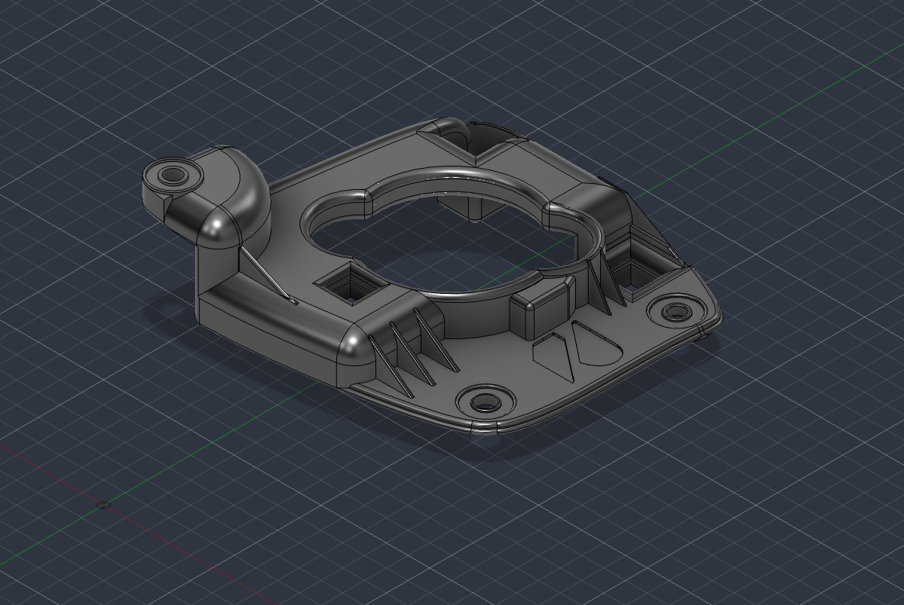

Reverse engineering
Analysis of an existing component to recover its geometry, interfaces and functional intent.
Reverse engineering / Product development
Reverse engineering, 3D design, prototyping and custom fabrication for parts that no longer exist, no longer fit, or need to work better.
What we solve
Built around the application
Reverso Works studies the part, the interface and the job it needs to perform. We rebuild that logic as a manufacturable solution — documented, revisable and ready to validate.
Capabilities
One technical workflow
Analysis of an existing component to recover its geometry, interfaces and functional intent.
Editable digital models developed for fit, revision control and the selected production process.
Physical iterations used to verify installation, clearances and real-world behavior before final delivery.
One-off parts and small production runs made for applications that standard supply cannot support.
Selected work
Project 001 / Automotive
A replacement mounting structure for a 2004 Subaru Impreza WRX STI, developed from the original assembly and rebuilt as a controlled CAD model.

Process
Clear steps / visible decisions
We define the application, failure, constraints and the outcome you actually need.
We inspect the existing part, assembly, photos, measurements or available reference data.
The geometry is reconstructed and refined as an editable, production-oriented CAD model.
A physical iteration is produced to test fit, access, clearances and assembly behavior.
The approved solution is fabricated, documented and prepared for repeatable revision.
How we work
You should understand what is known, what is assumed and what still needs to be tested.
Models and decisions are organized so an approved solution can be understood and reproduced.
You speak with the person developing the part, keeping technical context close to every decision.
Critical fit and performance are treated as requirements to verify, not promises to improvise.
Reverso Works
We work on replacement components, adaptations, prototypes and special-use parts. The scale stays focused so each project receives direct technical attention from first reference to final revision.
Questions
Yes. An existing component, mating assembly, photographs and measurements can all become useful reference data. We first assess what is available and what still needs to be captured.
No. Many projects begin with the physical problem rather than a drawing. Photos, the application and a clear description of the failure are enough to start the conversation.
Yes. Reverso Works is designed for unique parts, prototypes and small quantities where a standard supplier is not the right fit.
Include a few clear photos, the vehicle or equipment involved, what the part needs to do, quantity and any timeline you are working toward.
Start with the problem
Send the context you have. We can begin with photographs and a conversation, even when the technical package is not complete yet.
Helpful for the first conversation